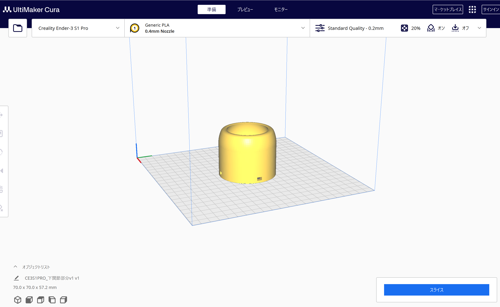
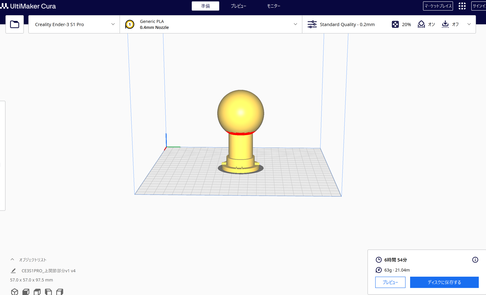
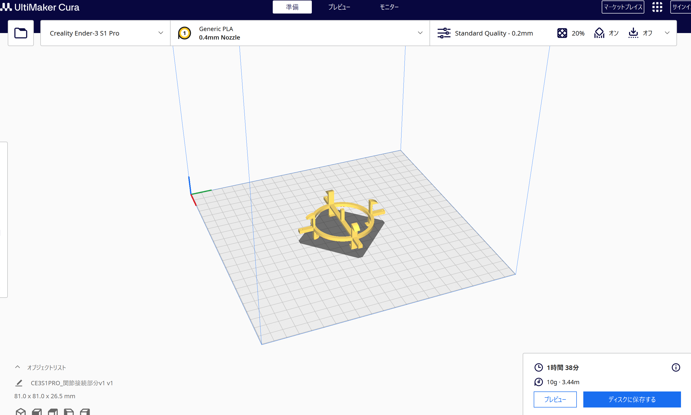
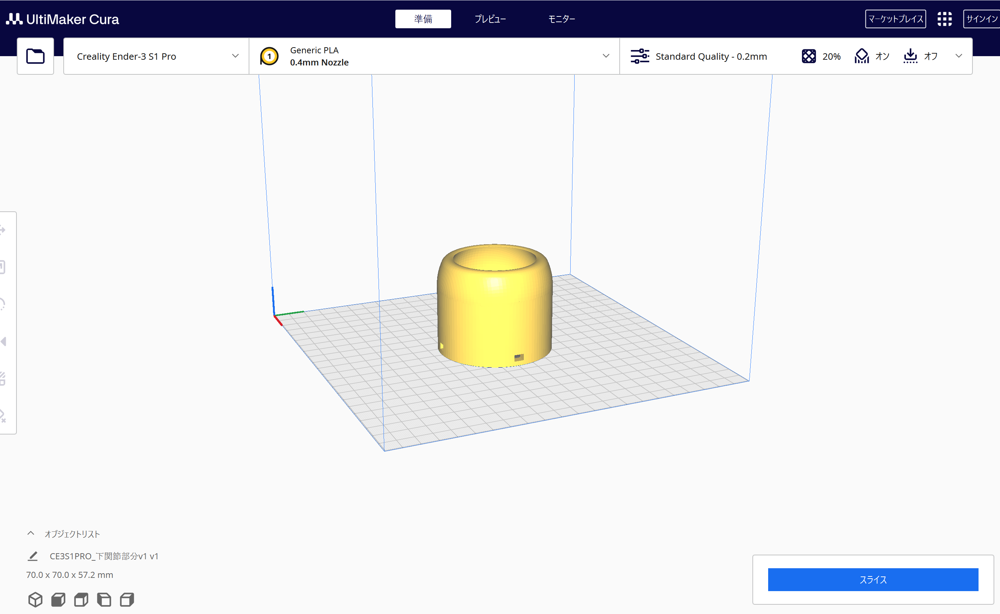
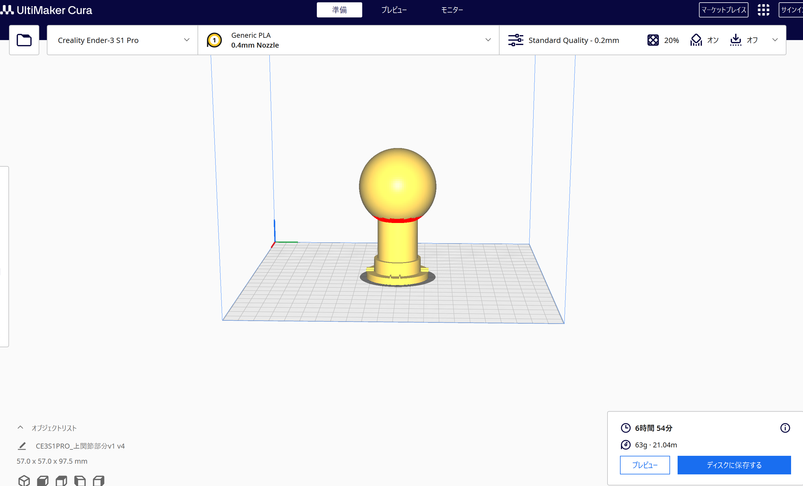
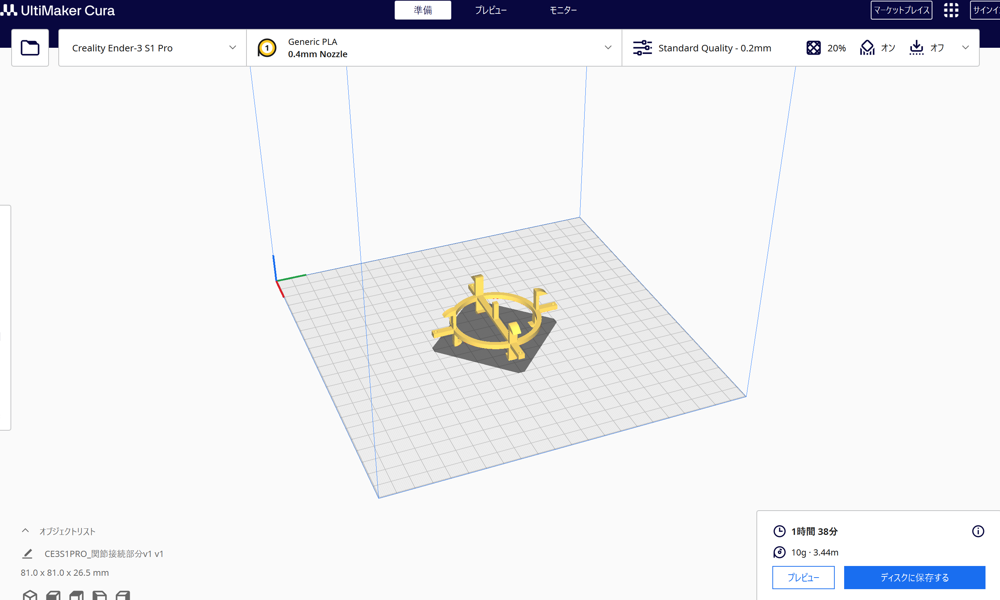

１．趣旨
大学でFABラボがあったり、授業でプログラム等を学ぶしせっかくだから何か作ろうの会
今考えているのはしっぽ状の何かを作ろうと考えている
おそらく難易度的に頓挫するかXビジネスの予定を見るに最終課題にするかもしれない
今考えているのはしっぽ状の何かを作ろうと考えている
おそらく難易度的に頓挫するかXビジネスの予定を見るに最終課題にするかもしれない
２．構想
よく漫画やアニメで見る獣人（？）のようなしっぽを作りたい。
機能としてはしっぽの先端でコップをもてたり、支えたりできたら完璧
音声認識機能や水平機能（水の入ったものを持っても平気）があるとなおよい
さらに言えばしっぽで体を支えられるようなら文句なし
機能としてはしっぽの先端でコップをもてたり、支えたりできたら完璧
音声認識機能や水平機能（水の入ったものを持っても平気）があるとなおよい
さらに言えばしっぽで体を支えられるようなら文句なし
３．設計
おそらく何かしらに設計図を書いてしっかり測定してから着手したほうが良いのだろう
だが非常にめんどくさいのとそういった大きさのものを作ってみるノウハウが一切ないことを考え
とりあえずどんなふうになるかの確認をするために関節部分を作ってみる
最低限の構想としてイラストは書いたので後で貼っておくことにする



ただ今でも出ている問題として、プリント時間が長すぎることがネック
いま設計している段階での大きさがおそらく一番ちょうどいいはず
だが非常にめんどくさいのとそういった大きさのものを作ってみるノウハウが一切ないことを考え
とりあえずどんなふうになるかの確認をするために関節部分を作ってみる
最低限の構想としてイラストは書いたので後で貼っておくことにする



ただ今でも出ている問題として、プリント時間が長すぎることがネック
いま設計している段階での大きさがおそらく一番ちょうどいいはず